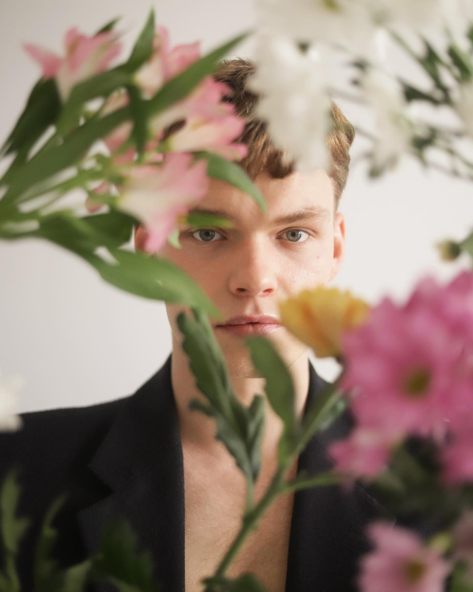
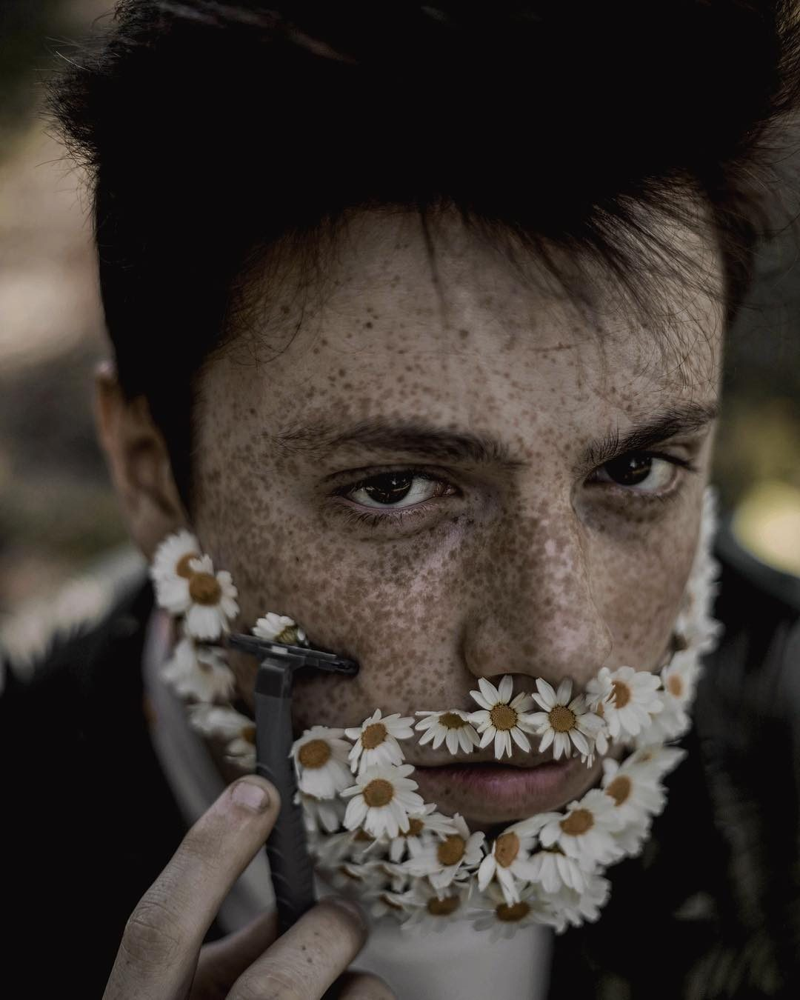
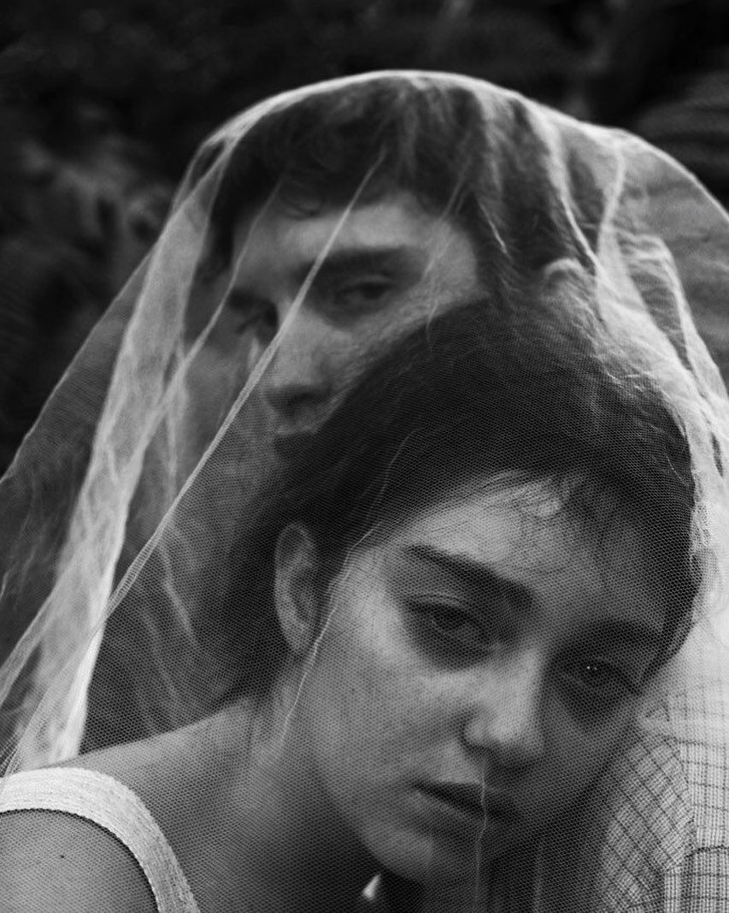

Tony Nieve
Concepto
Proyecto personal de fotografía desarrollado a través de la moda, el retrato y la experimentación visual. Desde 2017 la fotografía es una parte central de mi trabajo: fotografío a personas, trabajo con modelos y creadores de contenido, los dirijo durante las sesiones y decido la dirección visual de cada imagen.




El proyecto
Estas imágenes tienen algo de cuento de hadas y también algo de melancolía. En cada foto construyo un pequeño mundo a partir de una luz, un gesto o un personaje, y dejo que la historia aparezca sola, sin explicarla demasiado. Empezó como un proyecto personal, pero su forma de contar encaja de manera natural con la moda, lo editorial y la dirección de arte.
Siguiente proyecto